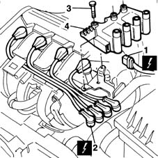
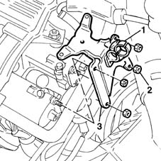

5510C14 ignition coil/s - r+r
- Path
- Procedures > 55 ELECTRICAL EQUIPMENT > 5510 ENGINE IGNITION > 5510C coil, ecu, sensors > 5510C14 ignition coil/s - r+r
- Kind
- repair procedure (removal / refitting; the operation number is the code)
- Applies to
- engines: 1.6 16v; all production periods
- Interactive page
- https://sloeber94.github.io/elrnDB-fMltpl/en/#/2891884
Applies to: engines: 1.6 16v; all production periods
 Removing
Removing
 Refitting
Refitting1. Disconnect the electricaly supply connection for the ignition coils.
 | Name | Connector |
|---|---|---|
1 | Ignition coil |
2. Disconnect the high tension leads for the spark plugs from the coils.
3. Undo the bolts fixing the coils to the mounting.
4. Remove the ignition coils.

Applies to: engines: 1.6 16v; all production periods
If necessary, remove the ignition coils mounting following the steps described below.
1. Open the bands retaining the electrical wiring.
2. Undo the nuts fixing the coils mounting to the camshaft housings.
3. Remove the ignition coils mounting.

Applies to: engines: 1.6 16v; all production periods
Refitting
RemovingCheck that the coils are not damaged.
If removed, refit the ignition coils mounting.
Tighten the fixing nuts to the recommended torque.
 | Fastening | Component | Ø | Value (daNm) |
|---|---|---|---|---|
- | Nut | IGNITION COIL SUPPORT | M7 | 1.5 |
Position the ignition coils.
Tighten the bolts fixing the coils to the mounting.
| Fastening | Component | Ø | Value (daNm) |
|---|---|---|---|---|
- | Bolt | IGNITION COIL/REEL | M6 | 0.9 |
Connect the high tension leads for the spark plugs to the coils.
Connect the electrical supply connection for the ignition coils.
Check the operation of the ignition system.
Topics linked from this page (1)
Topics that link to this page (6)
- B11 ENGINE STARTS WITH DIFFICULTY' / WHEN WARM
- B20 ENGINE STARTS, AND CUTS OUT STRAIGHT AWAY
- D01 ENGINE NOT RUNNING SMOOTHLY / (HESISTANT)
- 1020D18 front crank shaft cover oil seal - replace
- 1032B10 toothed timing belt - r + r for timing adjustment or replacement
- 1032B16 toothed timing belt - r r with engine removed